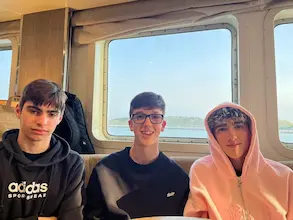
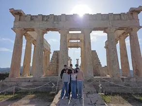
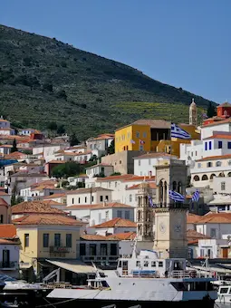
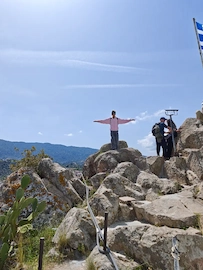
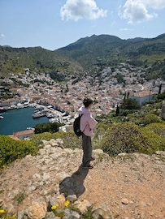
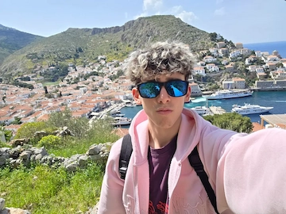

Exploración de Islas
Sorpendentemente dejando atras la pobreza y suciedad.






Resumen del Día
Este día ya se pasaron. Nos tuvimos que levantar a las 6 de la mañana para pillar el barquito e ir a las isla, aparte nos habíamos acostado a las 4 de la madrugada el día anterior y estábamos muertos. Dormimos prácticamente todo el trayecto hacia la primera isla y, aun por encima, pasamos un frío increíble porque la puerta que estaba cerca de nosotros se quedó abierta y entraba todo el aire. También cabe recalcar que, cuando me desperté, fui a comprar una Coca-Cola al bar del barco y me clavaron 6 pavos por una Pepsi y 4 por las galletas.
La primera isla, Hydra, fue en mi opinión la mejor de todas. Estaba COMPLETAMENTE llena de gatitos y eran todos súper monos. Era el lugar más bonito que habíamos visto hasta el momento, sobre todo porque las paredes eran blancas y no del color tierra de la ciudad. Subimos hasta la cima de una montaña que tenía una bandera arriba para sacarnos unas fotos, y con lo que tardamos en subir y bajar, ya tuvimos que volver corriendo al barco.
La segunda isla fue la peor de todas: estuvimos un total de 20 minutazos y solo nos dio tiempo a subir a un faro y a hacernos una foto con los chinos que estaban por allí.
En la tercera isla pagamos un tour aparte que nos llevó en autobús a ver una iglesia grande y un templo de Poseidón, para luego dejarnos de vuelta en el barco. El viaje de regreso se hizo bastante largo, aunque no tanto como el de ida. De nuevo considero necesario recalcar la gran diferencia económica entre las islas y la capital del país.
Finalmente, volvimos al hotel para cenar y colapsar en la cama.